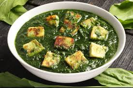

Pictures :


Palak paneer (pronounced [paːlək pəniːɾ]) is a vegetarian dish originating from the Indian subcontinent,[1] consisting of paneer (a type of cottage cheese) in a thick paste made from puréed spinach, called palak in Hindi, Marathi, Gujarati, and other Indian languages. [2][3] [4] The terms palak paneer and saag paneer are sometimes used interchangeably in restaurants in the United States and Canada. However, saag paneer is different from traditional palak paneer in that it contains other green leafy vegetables, such as mustard greens, whereas palak paneer only contains spinach.[5] [6] [7] Dhaba restaurants often specialize in palak paneer.